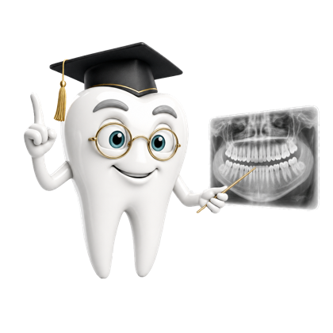

What is inside
Three exam components, separately paced
Questions are written against the published content outlines for each component and are tagged to the outline section they test, so a weak area is visible rather than guessed at.
| Component | Questions | Units | Lessons |
|---|---|---|---|
| Radiation Health & Safety (RHS) | 400 | 3 | 67 |
| Infection Control (ICE) | 270 | 4 | 45 |
| General Chairside (GC) | 330 | 4 | 55 |
An illustrated clinical atlas
Eight picture-first categories — anatomy, radiology, hygiene, restorative, periodontics, prosthodontics, implants and oral surgery — with 337 cards and 275 atlas questions. Every image is a licensed openly-published work with its source, licence and creator recorded and credited in the app.
Timed mock exams
Per-component practice exams plus a full 245-question, 3-hour-15-minute sitting that mirrors taking all three components in one session. The clock keeps running if you leave the app, exactly like the real thing.
Spaced repetition that actually schedules
Review timing is driven by the open-source FSRS-6 algorithm, so questions you keep missing come back sooner and questions you have mastered stop taking up your day. Streaks, XP and daily goals exist to get you to open the app — the scheduling underneath is doing the real work.
How access works
Dentalingo Study Camp is a subscription that unlocks everything: all three exam components in full, every Lab area and every timed mock exam. It comes in three lengths — 1 month, 3 months and 6 months — and the longer the camp, the less it costs per month.
The camp renews automatically at the end of each period unless you turn auto-renew off, and you can cancel at any time from your Apple Account settings. Current prices for your country are shown in the app before you buy anything — nothing is charged until you confirm.
Before subscribing you get 7 free questions. That is seven in total, once, not seven a day — enough to see how the app teaches before you decide. Everything you have already unlocked with an earlier one-time purchase keeps working.
Privacy in one line
